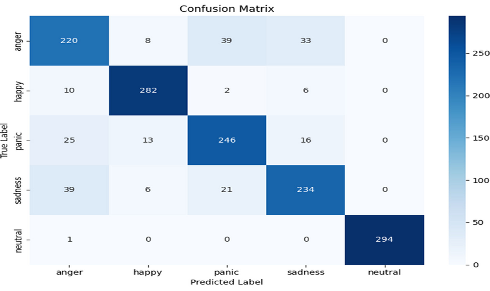
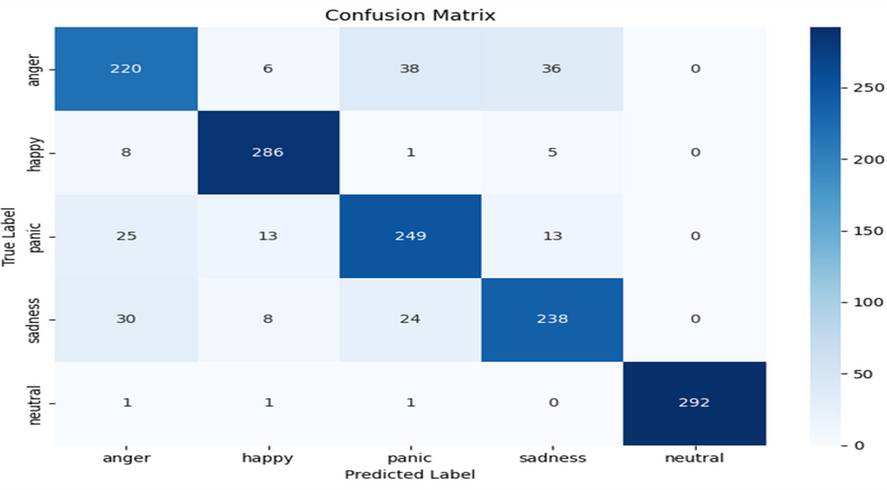
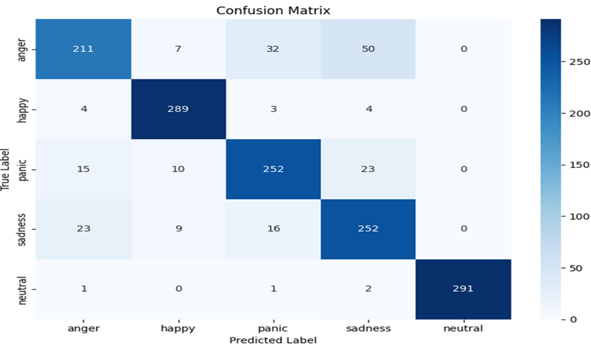
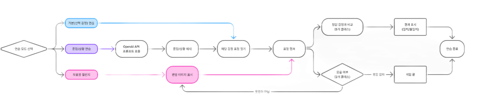
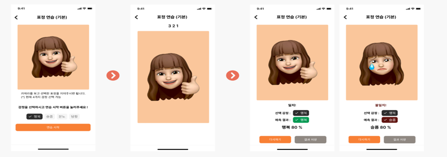
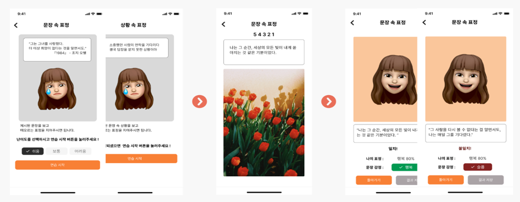

정국호
데이터 분석 & AI
- 🎂 생년월일: 1999년 09월 14일 (만 25세)
- 📞 연락처: 010-4138-5728
- 📧 이메일: mrgjh13579@gmail.com
- 📍 주소: 부산광역시 사상구 주례로
- 🔗 Github: 여기로오세요~
- 🎖️ 병역: 육군 병장 만기 제대
(2019.03.04 - 2020.10.07)
표정 연습 애플리케이션
프로젝트 주제
표정 연습 애플리케이션 – 표정을 표현을 어려워 하는 사람들에게 재미와 연습을 동시에 제공 할 수 있는 앱을 제작
프로젝트의 어려움
한국인이라는 인종과 화남,기쁨,당황,슬픔이라는 적은 감정
프로젝트 정보
- 프로젝트 일정 : 2025.06.16 ~ 2025.07.10
- 프로젝트 인원 : 5명
- 개인 기여도 : 60% (모델 학습,전처리,Flask,Flutter)
- 관련 스킬 : CV, CNN , Flutter , Flask , DB
- 세부스킬 : Yolo , postgresql , Pre-trained CNN
다양한 사전학습 모델 사용
- ResNet50
- MobileNet v2 -> v3
- EfficentNetB0 -> B2 -> B3
- 최고 성능 + CBAM모듈
- VIT
- SWIN
사전 학습 모델 성능 비교
| 모델 | 파라미터수 | 연산량(FLOPs) | F1-Score | 정확도 |
|---|---|---|---|---|
| MobileNet | 4.2M | 0.3B | 0.80 | 80.0% |
| EfficientNet | 5.3M | 0.39B | 0.85 | 85.4% |
| CBAM + EfficientNet | 5.8M | 0.45B | 0.85 | 85.3% |
| ResNet50 | 25.6M | 4.1B | 0.82 | 81.7% |
| SWIN | 28M | 4.5B | 0.85 | 85.4% |
| ViT (Vision Transformer) | 85M | 55.4B | 0.86 | 85.7% |
최종 기반 모델 -> EfficentNetB0
경량화 모델이면서 성능이 가장 좋은 모델
문제점

성능이 좋지만 일반화 성능이 너무 떨어짐 처음에는 과적합 의심 파인튜닝을 단계적으로 진행 했음에도 지속적으로 같은 문제가 발생
해결 방법
B0은 조금의 복잡성이 있으면 제대로된 분류를 하지 못한다는 논문을 채택, B2로 재설정 후 검증 진행했더니 성능은 조금 좋아졌지만 아직까지도 불안정한 성능을 보여줌

B0에서 이미지 증강

B3에서 이미지 증강
최종적으로 B3 모델로 사용하여 모델 완성
서비스 기능 - 표정 연습 애플리케이션

전체 흐름도

기본 연습모드

문장으로 표정연습
시연 영상
최종 인사이트
- 모델의 일반화 성능 검증의 중요성과 실제 환경 적용 시 발생할 수 있는 문제에 대한 깊이 있는 이해를 얻었습니다.
- 특히, 다양한 인종과 다양한 표정, 그리고 다양한 각도의 이미지를 수집하여 더욱 정확한 성능의 모델을 개발할 수 있다는 중요한 인사이트를 얻었습니다